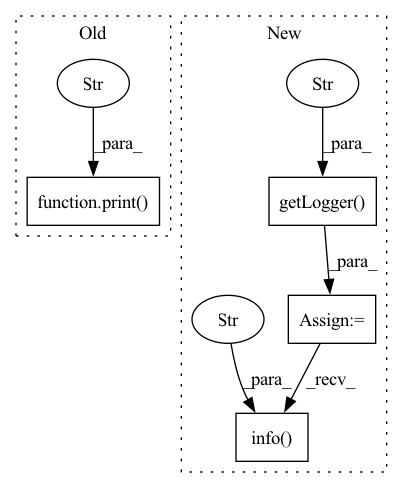

Pattern ID :771

Before Change
df1.to_csv(results_path,index=False)
data_diagram = pd.read_csv(results_path)
print("test_results", data_diagram)
// def debug(outputs, data, manager, args):
// // args_attrs = ["max_seq_length","feat_dim","warmup_proportion","freeze_bert_parameters","task_name",
After Change
data_diagram = pd.read_csv(results_path)
// print(data_diagram.tail())
logger = logging.getLogger("Detection")
logger.info(f"results:\n{data_diagram.tail()}")
// def debug(outputs, data, manager, args):
// // args_attrs = ["max_seq_length","feat_dim","warmup_proportion","freeze_bert_parameters","task_name",
In pattern: SUPERPATTERN
Frequency: 3
Non-data size: 4
Instances
Fragment ID: 3634423
Project Name: thuiar/textoir
Commit Name: b9407cb43224a4eb0a55a200e21afc0b64cef61c
Time: 2021-06-04
Author: richandyuquan@live.com
File Name: open_intent_detection/utils/functions.py
M Class Name: AnonimousClass
N Class Name: AnonimousClass
M Method Name: save_results(2)
N Method Name: save_results(2)
M Parent Class:
N Parent Class:
M File Name: open_intent_detection/utils/functions.py
N File Name: open_intent_detection/utils/functions.py
M Start Line: 65
M End Line: 67
N Start Line: 69
N End Line: 70
'>
Before Change
try:
// Create target Directory for Tiny ImageNet data
os.makedirs(self.data_folder)
print("Directory ", self.data_folder, " Created ")
self.download = download
self.download_tinyImageNet()
except OSError:
After Change
:param fun target_transform: Pytorch transformation founction for y
:param bool download: True for downloading the dataset
self.log = logging.getLogger("avalanche")
self.transform = transform
self.target_transform = target_transform
self.train = train
if os.path.isabs(data_folder):
self.data_folder = data_folder
else:
self.data_folder = os.path.join(
os.path.dirname(__file__),
data_folder
)
if os.path.exists(self.data_folder):
if download:
self.log.info(
"Directory {} already exists".format(self.data_folder))
else:
// Create target Directory for Tiny ImageNet data
os.makedirs(self.data_folder)
self.log.info("Directory ", self.data_folder, " Created ")
self.download = download
self.download_tinyImageNet()
self.data_folder = os.path.join(self.data_folder, "tiny-imagenet-200")
'>
Fragment ID: 3634438
Project Name: continualai/avalanche
Commit Name: 178b94a2ab42a48b1d69f7bedee87c48bc3d1045
Time: 2020-11-25
Author: vincenzo.lomonaco@unibo.it
File Name: avalanche/benchmarks/datasets/tiny_imagenet/tiny_imagenet.py
M Class Name: TinyImagenet
N Class Name: TinyImagenet
M Method Name: __init__(6)
N Method Name: __init__(6)
M Parent Class: Dataset
N Parent Class: Dataset
M File Name: avalanche/benchmarks/datasets/tiny_imagenet/tiny_imagenet.py
N File Name: avalanche/benchmarks/datasets/tiny_imagenet/tiny_imagenet.py
M Start Line: 57
M End Line: 75
N Start Line: 54
N End Line: 77
'>
Before Change
def create_syn_data(model):
size = 0
print("Creating Syn data for Optimal params and their Fisher info")
for name, param in model.named_parameters():
if "bn" not in name and "output" not in name:
print(name, param.flatten().size(0))
After Change
def create_syn_data(model):
size = 0
log = logging.getLogger("avalanche")
log.info("Creating Syn data for Optimal params and their Fisher info")
for name, param in model.named_parameters():
if "bn" not in name and "output" not in name:
log.info(name, param.flatten().size(0))
'>
Fragment ID: 3634433
Project Name: continualai/avalanche
Commit Name: 178b94a2ab42a48b1d69f7bedee87c48bc3d1045
Time: 2020-11-25
Author: vincenzo.lomonaco@unibo.it
File Name: avalanche/training/deprecated/syn_int/utils.py
M Class Name: AnonimousClass
N Class Name: AnonimousClass
M Method Name: create_syn_data(1)
N Method Name: create_syn_data(1)
M Parent Class:
N Parent Class:
M File Name: avalanche/training/deprecated/syn_int/utils.py
N File Name: avalanche/training/deprecated/syn_int/utils.py
M Start Line: 30
M End Line: 30
N Start Line: 31
N End Line: 37